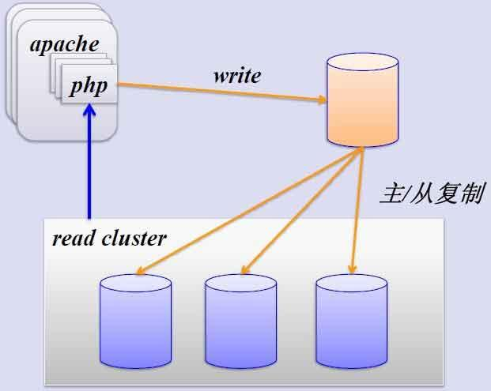
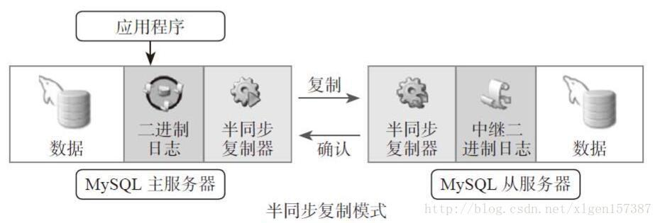

摘要：mysql的主从复制，级联复制，加密复制，半同步复制，cluster,
Mysql复制
扩展方式： Scale Up ，Scale Out
MySQL的扩展
读写分离
复制：每个节点都有相同的数据集
向外扩展
二进制日志,实现主从的主要原理
单向
复制的功用：
数据分布
负载均衡读
备份
高可用和故障切换
MySQL升级测试
主从复制线程：

- 主节点：
dump Thread：为每个Slave的I/O Thread启动一个dump线程，用于向其发送binary log events
- 从节点：
I/O Thread：向Master请求二进制日志事件，并保存于中继日志中SQL Thread：从中继日志中读取日志事件，在本地完成重放
- 跟复制功能相关的文件：
master.info：用于保存slave连接至master时的相关信息，例如账号、密码、服务器地址等。relay-log.info：保存在当前slave节点上已经复制的当前二进制日志和本地replay log日志的对应关系
- 主从复制特点：
异步复制
主从数据不一致比较常见
- 复制架构：
Master/Slave,Master/Master, 环状复制
一主多从
从服务器还可以再有从服务器
一从多主:适用于多个不同数据库
- 复制需要考虑二进制日志事件记录格式
STATEMENT（5.0之前），ROW（5.1之后，推荐），MIXED
搭建主从复制
主服务器
修改配置文件/etc/my.cnf，启动服务，并授权slave账户同步，同时，记录二进制日志的位置
1 | ]# vim /etc/my.cnf |
从服务器
修改配置文件/etc/my.cnf,在[mysqld]添加server_id=2,必须和主服务器不一样。修改完配置文件，重启服务即可systemctl restart mariadb
1 | HELP CHANGE MASTER TO |
报错学习
做实验的时候，从服务器同步不了，还报错了。
1 | show slave status\G: |
报错从日志查询,查询了一下报错，1062的报错，应该是主键冲突。
1 | tail -f /var/log/mariadb/mariadb.log |
然后查询了一下mariadb服务器的binlog_format,居然是select @@binlog_format;,STATEMENT ,心中忽然一喜，应该是这个问题，网上也查询了蛮多了资料，最后解决了这个报错如下：
在主服务器上,在/etc/my.cnf将binlog_format=row，重启服务
1 | -- 确认binlog_format为row |
在从服务器上,重新重置即可解决。
1 | STOP SLAVE; |
主从复制plus：
场景：从服务器的大数据备份,随着业务的增加，要求增加从服务器
主节点备份
1 | ]# mysqldump -A -F --single-transaction --master-data=1 >full.sql |
新增从节点的配置
配置/etc/my.cnf加入下面几行即可。然后启动服务。
tips：/etc/my.cnf,文件损坏，想恢复默认设置，yum install - y mariadb-libs
1 | ]# vim /etc/my.cnf |
将全备份的/backup/full.sql的change master to子句改为最初起点。然后实现sql语句全备份，并自动同步1
2
3
4
5
6
7
8
9
10
11
12]# vim /backup/full.sql
···
CHANGE MASTER TO
MASTER_HOST='192.168.1.7',
MASTER_USER='repluser',
MASTER_PASSWORD='centos',
MASTER_PORT=3306,
MASTER_LOG_FILE='master-bin.000001',
MASTER_LOG_POS=245,
···
]# mysql < /backup/full.sql
配置完成
级联复制
master：192.168.1.7；slave1：192.168.1.8;slave2:192.168.1.18
主节点配置
1 | ]# vim /etc/my.cnf |
slave1的配置
ip为192.168.1.8，配置过程和主从复制差不多。
1 | ]# vim /etc/my.cnf |
salve2的配置
ip为192.168.1.18,此时，slave2的主是slave1，故而master的ip应该为192.168.1.8
1 | HELP CHANGE MASTER TO |
半同步复制
默认情况下，MySQL的复制功能是异步的，异步复制可以提供最佳的性能，主库把binlog日志发送给从库即结束，并不验证从库是否接收完毕。这意味着当主服务器或从服务器端发生故障时，有可能从服务器没有接收到主服务器发送过来的binlog日志，这就会造成主服务器和从服务器的数据不一致，甚至在恢复时造成数据的丢失。

在配置好mysql主从复制后，可以安装某些插件，只要有一台从服务器同步完成，即可认为数据同步。具体如下：
在主服务器上：
1 | install plugin rpl_semi_sync_master soname 'semisync_master.so'; |
从服务器：
1 | stop slave; |
加密复制
ssh证书安装，相关的ca证书知识，源于openssl，具体原理可以参考博主前面的博文。
在默认的主从复制过程或远程连接到MySQL/MariaDB所有的链接通信中的数据都是明文的，外网里访问数据或则复制，存在安全隐患。通过SSL/TLS加密的方式进行复制的方法，来进一步提高数据的安全性
- 主服务器开启SSL：[mysqld] 加一行ssl
- 主服务器配置证书和私钥；并且创建一个要求必须使用SSL连接的复制账号
- 从服务器使用CHANGER MASTER TO 命令时指明ssl相关选项
具体证书生成：
1 | ]# mkdir /etc/my.cnf.d/ssl/ |
主服务器配置
1 | ]# vim /etc/my.cnf |
从服务器配置
1 | ]# mysql -urepluser -preplpass -h192.168.1.8 --ssl-ca=/etc/my.cnf.d/ssl/cacert.pem --ssl-cert=/etc/my.cnf.d/ssl/slave.crt --ssl-key=/etc/my.cnf.d/ssl/slave.key |
指令集合
1 | -- 启动主从复制 |